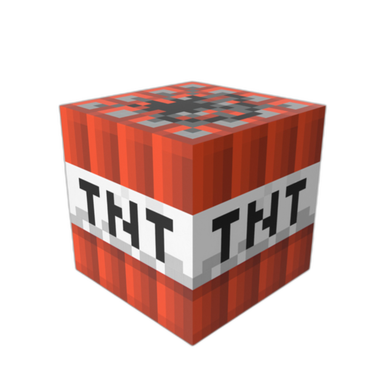

turtles are as slow as some people think. Turtle can swim aswell.Turtles are reptiles of the order Testudines, characterized by a special shell developed mainly from their ribs. Modern turtles are divided into two major groups, the Pleurodira (side necked turtles) and Cryptodira (hidden necked turtles), which differ in the way the head retracts. There are 360 living and recently extinct species of turtles, including land-dwelling tortoises and freshwater terrapins.
More Turtle
Turtle shells are made mostly of bone; the upper part is the domed carapace, while the underside is the flatter plastron or belly-plate. Its outer surface is covered in scales made of keratin, the material of hair, horns, and claws. The carapace bones develop from ribs that grow sideways and develop into broad flat plates that join up to cover the body.they can also shed their shells.
Do not bomb turtle or else turtle go extint.

No to bomb